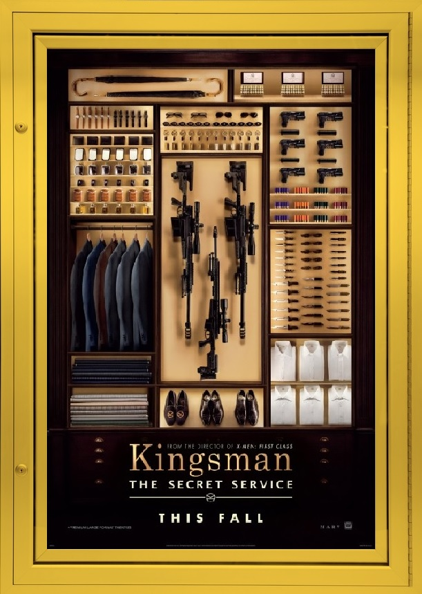

Everyone loves surprises, I certainly do, especially when it comes to movies. It is refreshing to watch something you never expected to enjoy. A few years back, I discovered a trailer for a film which had an interesting cast and story. When I saw it for the first time, I quickly realized just how awesome the experience was going to be. KINGSMAN was that movie (but you already knew that since that's what this review is about).
The film centers around a young man from south London (played by Taron Edgerton) who is recruited by a member of a secret organization dedicated to protecting the world from various threats. The young man is sent on a current mission, to stop a psychotic billionaire who's taking extreme measures to "save the planet". What follows are a bunch of shenanigans that are both hilarious and action-packed (there's a particular scene that's my personal favorite).
KINGSMAN represents Colin Firth first performance in an action-orientated film. While that may create some concern for people who are familiar with him, and have not seen this film, all fears are thrown right out the window almost immediately. He does his action scenes brilliantly and adds this sense of style to his character, I don't see in a lot of spy flicks and action movies in general (Fun Fact: Firth did 80% of his stunts in the film). A big bonus, Harry Hart, his character, likes to quote the famous singer Sting (though it's just one).
If you want to see a more recent film filled with espionage, comedy, balls-to-the-wall action and bad-ass gentlemen, then KINGSMAN: THE SECRET SERVICE is the movie for you (do not watch this with toddlers, parents, or grandparents).
Final Rating: